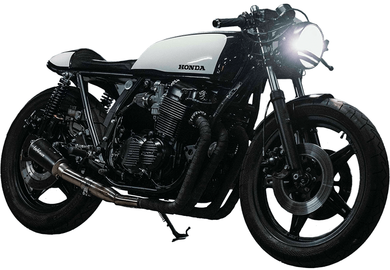
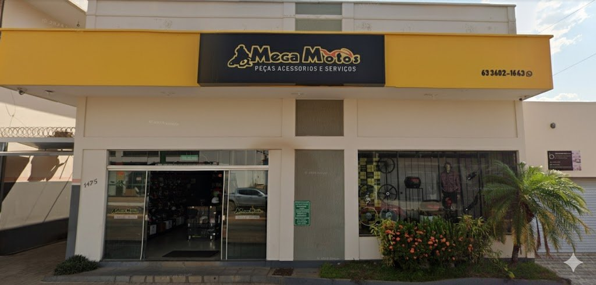

Peças originais
Conte com orientação para encontrar a peça compatível com a marca e o modelo da sua moto.
Consultar uma peça ↗Da peça certa à revisão completa. O cuidado que sua moto precisa, aqui em Paraíso do Tocantins.

Encontre o que sua moto precisa.
Conheça os cuidados da oficina.
Veja endereços e contatos.
Peças originais e paralelas de primeira linha para a manutenção da sua motocicleta. Consulte nossa equipe sobre a aplicação e a disponibilidade.
Conte com orientação para encontrar a peça compatível com a marca e o modelo da sua moto.
Consultar uma peça ↗Opções de reposição para os cuidados do dia a dia, com atenção à procedência e à aplicação.
Falar com a equipe ↗Converse com a gente sobre os acessórios que você procura para acompanhar sua rotina.
Consultar acessórios ↗Tenha em mãos a marca, o modelo e o ano da moto. Se puder, envie uma foto da peça pelo WhatsApp.
Prevenir faz parte do cuidado. Nossa equipe verifica os principais sistemas da sua moto para identificar o que precisa de atenção.
Quero agendar uma revisão ↗Verificação dos componentes de frenagem e das condições dos pneus.
Conferência dos cuidados de lubrificação necessários à manutenção.
Avaliação do sistema de suspensão e dos componentes que exigem atenção.
Verificação do funcionamento dos componentes do sistema elétrico.
Inspeção do conjunto de transmissão e das necessidades de manutenção.
Avaliação do funcionamento do motor e orientação sobre os cuidados indicados.

A Mega Motos reúne peças, acessórios e serviços de oficina em Paraíso do Tocantins. Um lugar para conversar sobre sua moto, encontrar peças e cuidar da manutenção.
Com duas unidades na cidade, estamos perto de você para ajudar no próximo cuidado com a sua motocicleta.
Acompanhe @megamotospso ↗Encontre a unidade mais conveniente e fale com a nossa equipe.